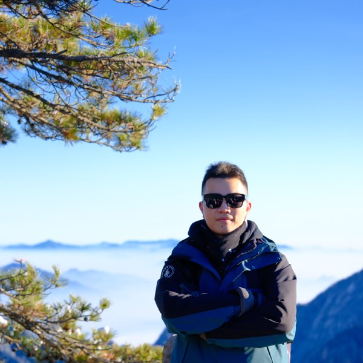

Background, education, and what I'm working on.

National University of Singapore
Final Year Project: Physics-informed ECG surrogate model for
efficient cardiac digital twin — FEM simulation with openCARP (Track 1)
and DIMON/PINNs surrogate modelling (Track 2).
View Projects →
Replace with your high school or other education details.
Engineering internship in semiconductor equipment R&D. Developed modular software tools for hardware test automation, applied advanced optical microscopy techniques (DIC, dark-field), and worked with cleanroom protocols.
Investigated RRM1 RNA-binding protein function in Arabidopsis thaliana. Molecular cloning, genotyping (PCR/gel electrophoresis), Agrobacterium-mediated transformation, SEM imaging, and RNA-seq in a plant genetics research lab.
Co-led the neighbourhood team to organise Cultural Kaleidoscope, a university culture and community-building event for 300+ residents. Event planning, logistics coordination, and community engagement.
See the Skills page for a full overview — click any skill to filter relevant projects.
Add your publications, conference presentations, scholarships, or awards here.